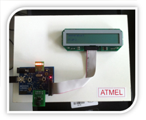

VI Projekt: Temperatursensor LM 35
2.0
Time-Delay, Mailbox und LCD
Main Page
Data Structures
Files
File List
Globals
All
Functions
Variables
Typedefs
Macros
a
b
c
f
h
i
l
m
o
p
s
t
u
All
Data Structures
Files
Functions
Variables
Typedefs
Macros
Here is a list of all functions, variables, defines, enums, and typedefs with links to the files they belong to:
- t -
TASK_STK_SIZE :
ProjekLinggSteiner.c
TCreateTasks() :
ProjekLinggSteiner.c
TCreateTasks_PRIO :
ProjekLinggSteiner.c
TCreateTasksStk :
ProjekLinggSteiner.c
TLCD() :
ProjekLinggSteiner.c
TLCD_PRIO :
ProjekLinggSteiner.c
TLCDStk :
ProjekLinggSteiner.c
TMessung() :
ProjekLinggSteiner.c
TMessung_PRIO :
ProjekLinggSteiner.c
TMessungStk :
ProjekLinggSteiner.c
TRUE :
uCOS_II.H
TxMbox :
ProjekLinggSteiner.c
Generated on Mon Jul 1 2013 16:17:51 for VI Projekt: Temperatursensor LM 35 by
1.8.4
 1.8.4
1.8.4